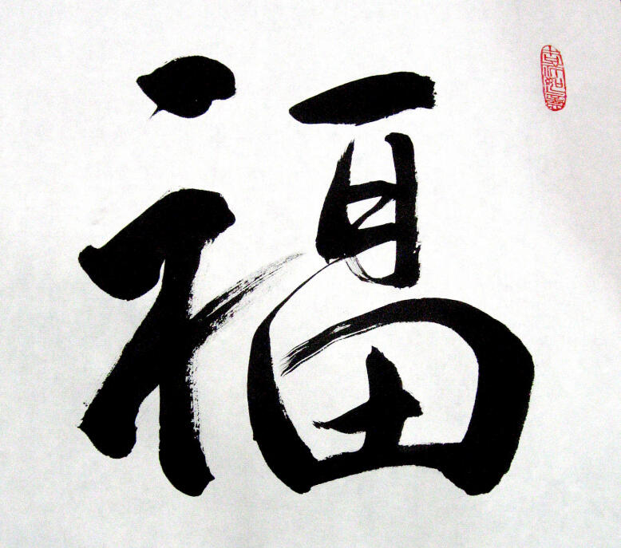

An indigenous writing system · Since 2009
A Written Script For Igbo
Ńdébé is a modern writing system for the Ìgbò language.Invented by Lotanna Igwe-Odunze in 2009, then refined and perfected over a decade, the Ńdébé script combines ancient Ìgbò designs with modern practicality in the first truly usable, truly writeable, truly readable, and truly indigenous written form of Ìgbò.
Ìgbò in Ńdébé script.
01 / A language on the page
What's The Point?
The vagaries of history, but British colonisation and missionary evangelism especially, suppressed the natural growth and development of Igbo as a language and a medium of expression and communication.
Long after Nigeria and Ìgbò people received independence, our language never caught up with the modern world.Today, Ìgbò is a threatened, if not endangered language because, no matter how many initiatives and meetings we attend to encourage people to speak Ìgbò, our language will never truly flourish until we write and read widely in Ìgbò.
Long after Nigeria and Ìgbò people received independence, our language never caught up with the modern world.Today, Ìgbò is a threatened, if not endangered language because, no matter how many initiatives and meetings we attend to encourage people to speak Ìgbò, our language will never truly flourish until we write and read widely in Ìgbò.
But we already use english
The limitations of the Latin alphabet introduced by English are a well known and deep source of frustration for everyone who has ever tried to read or write Ìgbò.
The Latin alphabet:
- Makes tone marking a chore, resulting in most people omitting it in their writing. 😤
- Does not fully cover the range of Ìgbò sounds. 😡
- Has caused innumerable bad spellings of Ìgbò words, which are now ubiquitous. 🤬
- Influences pronunciation of Ìgbò words like English, eroding fluency even in native speakers. 🤢
- Stunts Ìgbò expression, especially Igbo literature, as there is zero incentive to write in Ìgbò over English. 🤮
- Has inflicted countless other sins on the grammar, vocabulary, and syntax of Ìgbò and harmed the speech of too many Ìgbò speakers to count. 🤦🏾
- Makes tone marking a chore, resulting in most people omitting it in their writing. 😤
- Does not fully cover the range of Ìgbò sounds. 😡
- Has caused innumerable bad spellings of Ìgbò words, which are now ubiquitous. 🤬
- Influences pronunciation of Ìgbò words like English, eroding fluency even in native speakers. 🤢
- Stunts Ìgbò expression, especially Igbo literature, as there is zero incentive to write in Ìgbò over English. 🤮
- Has inflicted countless other sins on the grammar, vocabulary, and syntax of Ìgbò and harmed the speech of too many Ìgbò speakers to count. 🤦🏾
The Ńdébé Syllabary:
- Has built in tone notation, and introduces a revolutionary method of visually representing the Ìgbò tones, meaning you will never again struggle to figure out the tone of a word. 👏🏾👏🏾👏🏾
- Covers the full range of Ìgbò phonemes by introducing for the first time in Igbo history, characters for the interchangeable Ìgbò sounds such as R/L, F/H, etc. 👊🏾👊🏾👊🏾
- Enforces correct Ìgbò spelling through its syllabic structure. 👌🏾👌🏾👌🏾
- Is a visually stunning, intangible cultural heritage to fortify our Ìgbò identity for generations. 👶🏾👧🏽👦🏾
- Has built in tone notation, and introduces a revolutionary method of visually representing the Ìgbò tones, meaning you will never again struggle to figure out the tone of a word. 👏🏾👏🏾👏🏾
- Covers the full range of Ìgbò phonemes by introducing for the first time in Igbo history, characters for the interchangeable Ìgbò sounds such as R/L, F/H, etc. 👊🏾👊🏾👊🏾
- Enforces correct Ìgbò spelling through its syllabic structure. 👌🏾👌🏾👌🏾
- Is a visually stunning, intangible cultural heritage to fortify our Ìgbò identity for generations. 👶🏾👧🏽👦🏾
Okay, So Why Not Nsibidi?
Ńdébé pays homage to the old Nsibidi logographs, as well as Nwagu Aneke's proto-script, but is a unique, original, but more importantly, functional creation.Nsibidi, while beautiful and significant, is severely impractical as a daily writing script.Multiple failed attempts have been made to adapt Nsibidi for modern use, and will continue to fail because Nsibidi suffers from major expressive limitations, and is better suited for decorative, symbolic, or religious purposes.We have modern, busy lives.
We want to be able to write and read Ìgbò immediately.
Those limitations don't scale.Ńdébé is designed to.
We want to be able to write and read Ìgbò immediately.
Those limitations don't scale.Ńdébé is designed to.
02 / Read the forms
The Ndebe Script
Ńdébé is a syllabary.
This means that rather than having individual letters which are then combined to spell words like in English, Ńdébé represents all the possible sounds in Ìgbò as already combined characters for each syllable the way it sounds.
How Ńdẹ́bẹ́ works →This means that rather than having individual letters which are then combined to spell words like in English, Ńdébé represents all the possible sounds in Ìgbò as already combined characters for each syllable the way it sounds.
On a narrow screen, scroll each chart sideways to see every column. With a keyboard, focus the chart and use the arrow keys.
| A | Ẹ | Ị | Ọ | Ụ | E | I | O | U | N/M | |
|---|---|---|---|---|---|---|---|---|---|---|
| High | | | | | | | | | | |
| Mid | | | | | | | | | | |
| Low | | | | | | | | | | |
| | | | | | | | |
|---|---|---|---|---|---|---|---|
| | NW | GB | KP | B | P | NY | M |
| | G/V | G | N/L/Y | GW | K | KW | N |
| | R/H | D | L/R | Y/H | R | Y | L |
| | F/H/SH | CH | R/SH | J/Z | S/SH | J | B/V |
| | S | T | F/P | F | Z | B/W | S/T |
| | F/V | Y/GH | R/F | W | W/GH | NY/Ṇ | NW/Ṇ |
Numerals
0
1
2
3
4
5
6
7
8
9
10
11
12
13
14
15
16
17
18
19
The Basics
5 flag
+1 body
=6
The Ndebe number system is Base-20 (Sub Base 5) and has numeral symbols from 0 to 19.Each number in a group of 5 is related. Numbers 6 to 9 are derived by adding Number 5 and 1, 2, 3, and 4.The same is repeated for 11 to 14 with Number 10, and Numbers 16 to 19 with Number 15
- Vowel
- Above the branch
- Stem
- Below, on the left
- Radical
- Below, on the right
A consonant–vowel syllable is represented by a written character, made up of 3 parts - Stem, Radical, and Diacritic.There are 6 stems.
There are 7 radicals.
There are 27 diacritic vowel markers, plus 3 standalone N/M tone forms.
There are 7 radicals.
There are 27 diacritic vowel markers, plus 3 standalone N/M tone forms.
Start with the stem for B
Add the radical for B
B body + vowel on top
Add high-tone a
A vowel on its own
Diacritic Vowel Markers go on top of Consonant Bodies (which are made of a Stem and a Radical) to form a Syllable like Ba, Cha, Da, etcIf the vowel is isolated or the word begins with a vowel, the vowel marker has a dot beneath and stands on its own.
Isn't This.. Too Much?
You've probably seen Hanzi / Kanji / Hanja at least once in your life.
It's the Chinese script shared by China, Japan, and Korea, and it has over 100,000 characters.
It's the Chinese script shared by China, Japan, and Korea, and it has over 100,000 characters.

By the end of primary school, the average:Chinese child knows about 2500 hanzi characters by heart.
Japanese child knows about 1026 kanji characters by heart.
Japanese child knows about 1026 kanji characters by heart.
Ńdébé has only 1184 characters.
Only 52 of them must be memorised to able to read and write Ìgbò competently.You're smarter than a 10 year old.
You can definitely do this.
You can definitely do this.
Try it out! - typendebe.com
03 / Keep learning
Get the Syllabary
Explore the online Script Codex: the characters, components, vowels and tones of Ńdébé, rendered in the current fonts.
04 / A living script
So what's Next?
DISSEMINATION:
- The Ńdébé Script has already been written about and published in:
1. African Writing Systems of the Modern Age: The Sub-Saharan Region by Andrij Rovenchak and Jason Glavy
2. Enciclopedia de sistemas de escritura (Encyclopaedia of Writing Systems) by Santiago Velasco and Jose Galán
3. The Oxford Handbook of African Languages by Rainer Vossen and Gerrit J. Dimmendaal
- When we reach a critical mass of people using, reading, and writing Ìgbò in the Ńdébé script, it will be much easier to spread Ńdébé usage globally so everyone can read and write Ìgbò.
- The Ńdébé Script has already been written about and published in:
1. African Writing Systems of the Modern Age: The Sub-Saharan Region by Andrij Rovenchak and Jason Glavy
2. Enciclopedia de sistemas de escritura (Encyclopaedia of Writing Systems) by Santiago Velasco and Jose Galán
3. The Oxford Handbook of African Languages by Rainer Vossen and Gerrit J. Dimmendaal
- When we reach a critical mass of people using, reading, and writing Ìgbò in the Ńdébé script, it will be much easier to spread Ńdébé usage globally so everyone can read and write Ìgbò.
Coverage since 2020
- Inventing Ńdébé, an Indigenous Script for the Igbo Language — Folio Nigeria (2020), republished by Open Country Mag (2024)
- Ńdébé: A Modern Writing System for Ìgbò — African Digital Art (2025)
- Nsibidi/Ajami: Rebirthing Nigeria’s Lost Languages — The Guardian Nigeria (2022)
- The Igbo Language Gets Its Own Modern Script, But Will It Matter? — Channels Television (2020)
- Writing in Africa — Ńdébé — The Language Closet (2020)
- Writing Africa’s Future in New Characters — Popula (2020)
ADOPTION:
YOU are the crucial next step in the Ńdébé project.- Learn Ńdébé.
- Use Ńdébé.
- Tell other Ìgbò people or Ìgbò speakers about Ńdébé.
YOU are the crucial next step in the Ńdébé project.- Learn Ńdébé.
- Use Ńdébé.
- Tell other Ìgbò people or Ìgbò speakers about Ńdébé.
PROLIFERATION:
- Write Ìgbò with Ńdébé in your diary, on your blog, on Twitter, on video, wherever you like.
- Share pictures and videos of the Ìgbò you write with Ńdébé online with the hashtags #NdebeForIgbo and #NdebeProject and #IgboScript
- Use Ńdébé to add Ìgbò in your drawings, in your Ìgbò designs, get a tattoo in Ńdébé, do whatever you like with itEXCEPT:
- falsely claim you created it 😒😒😒
- use it for commercial purposes without a prior written agreement with me with specific terms. See the terms here
- serve as a representative of Ndebe or submit Ndebe in any capacity to any government, company, body, or organisation for any purpose. If you want to do this, you should contact me, and I will be the one to submit or represent because I am its creator
- Write Ìgbò with Ńdébé in your diary, on your blog, on Twitter, on video, wherever you like.
- Share pictures and videos of the Ìgbò you write with Ńdébé online with the hashtags #NdebeForIgbo and #NdebeProject and #IgboScript
- Use Ńdébé to add Ìgbò in your drawings, in your Ìgbò designs, get a tattoo in Ńdébé, do whatever you like with itEXCEPT:
- falsely claim you created it 😒😒😒
- use it for commercial purposes without a prior written agreement with me with specific terms. See the terms here
- serve as a representative of Ndebe or submit Ndebe in any capacity to any government, company, body, or organisation for any purpose. If you want to do this, you should contact me, and I will be the one to submit or represent because I am its creator
Other Success Stories
In 1830, the Vai syllabary was invented by Momolu Duwalu Bukele, a Liberian who said it came to him in a dream.
In 2008, it was officially digitised for use in computers, and online.In 1896, King Ibrahim Njoya invented the Bamum script for his Bamum people.
In 2009, it was officially digitised for use in computers, and online.In 1949, the N'ko alphabet was invented by Guinean writer, Solomana Kante, to write his language Maninka.
In 2006 it was officially digitised for use in computers, and online.
In 2008, it was officially digitised for use in computers, and online.In 1896, King Ibrahim Njoya invented the Bamum script for his Bamum people.
In 2009, it was officially digitised for use in computers, and online.In 1949, the N'ko alphabet was invented by Guinean writer, Solomana Kante, to write his language Maninka.
In 2006 it was officially digitised for use in computers, and online.
This is why using Ńdébé and telling other people about Ńdébé is so important.
You can do your part to share the gift of a writing system for Ìgbò that is truly our own.
Share Ńdẹ́bẹ́ ↗You can do your part to share the gift of a writing system for Ìgbò that is truly our own.
Questions?
Comments?
Send a message with your questions, comments, feedback, and inquiries about the Ńdébé script for Ìgbò, and receive a response at the contact information you provide.
Get in touch →